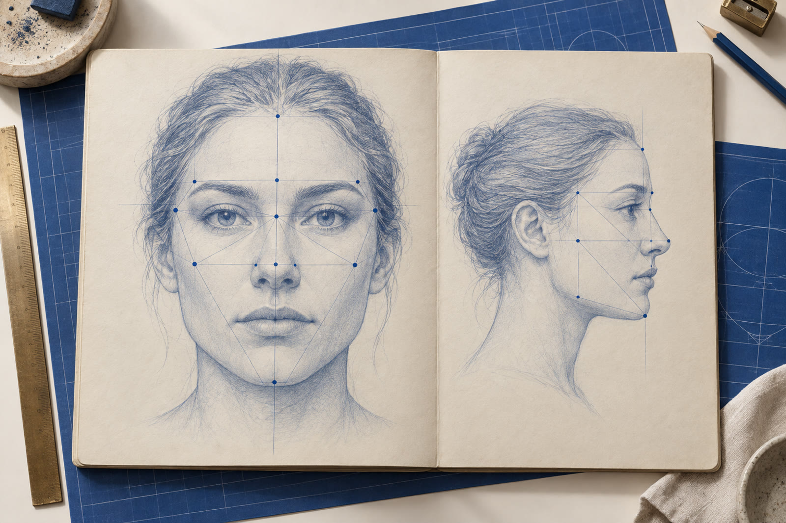

E se o que as pessoas dizem for a parte menos importante da história?
Só que a dor que uma pessoa sente quase nunca começa onde ela aparece.
Na maioria das vezes, o corpo está cumprindo uma função. E essa função deixa marcas no rosto e no corpo.

O rosto conta a história que a pessoa nunca te contou.
Na metodologia do Raio-X Humano, o rosto é lido por regiões: o lado direito revela a relação com a referência paterna, o lado esquerdo com a referência materna, e a região dos olhos guarda os sinais de peso, ausência e manipulação.
Não é olhar para alguém e “sentir alguma coisa”.
É saber onde olhar e o que comparar.
Trauma é a raiz.
Sintoma é o fruto.
Tratar só o fruto faz a dor ir embora e voltar. O Bruno criou a Teoria das 4 Funções Ocultas do Sintoma para mostrar qual papel cada dor está cumprindo.
Quando você descobre a função, você encontra a raiz.
E quando encontra a raiz, a sessão deixa de ser tentativa.
Até quem chegou cético saiu enxergando diferente.
“Não sou terapeuta. Isso funciona para mim?”
Funciona para quem quer entender pessoas, a começar por si mesmo.
Veja exatamente o que você aprende em cada uma das 2 noites.

Tudo o que funcionou em mais de 9.000 atendimentos, entregue em 2 noites.
Como ler o rosto, encontrar a função do sintoma e conduzir a sessão até a raiz. O ingresso é acessível porque quero que você saia daqui enxergando pessoas de um jeito que não vai conseguir desver.
Não acredite em mim. Leia o que os alunos mandaram na mesma noite.
Mensagens reais enviadas no grupo do workshop, na mesma noite.


Meu nome é Bruno Simplício. Sou psicanalista, analista comportamental e corporal, especialista em leitura fria e em rastreio de traumas, com formação em microexpressões faciais.
São mais de 9.000 atendimentos. Neles, percebi duas coisas que se repetem: as pessoas passam anos tratando o sintoma sem nunca chegar à raiz, e terapeutas bem formados, com muita teoria, ainda não sabem por onde começar um atendimento.
Foi para resolver isso que criei a Teoria das 4 Funções Ocultas do Sintoma e o Protocolo de Dessignificação, hoje usados por terapeutas no Brasil e no mundo.
Ok… mas qual é a pegadinha?
Depois dessas 2 noites, você nunca mais vai olhar para um rosto, ou para uma dor, do mesmo jeito.
SIM! QUERO MINHA VAGA NO RAIO-XO conteúdo tem caráter educacional e terapêutico complementar e não substitui diagnóstico ou tratamento médico.